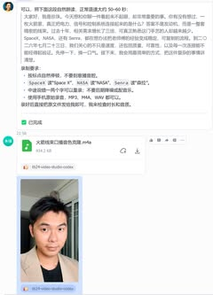

Threads｜zhenzhu600：Codex 串 HeyGen + MiniMax，五分鐘生成 15 秒數字人口播
來源是 Zhen Zhu（@zhenzhu600）在 Threads 分享的數字人口播實作：他讓 Codex 參考 Rachel 的 `rachel-digital-human-production` skill，使用 HeyGen 產生 image-to-video / avatar video，再用 MiniMax 做音色克隆與旁白，最後輸出一段講解「火箭線束公司」的短口播影片。

公開 Threads 內容
Threads canonical URL 為 `https://www.threads.com/@zhenzhu600/post/DbODstVmhWM`。頁面擷取時主串顯示約 653 次瀏覽，互動數約 8 讚、2 留言、12 分享。
作者描述的流程如下：
- 讓 Codex 參考 X / GitHub 上 Rachel 的數字人 production skill：`Jingyi-Wu-Richael/rachel-digital-human-production`。
- 讓 Codex 生成近期小紅書上一家「火箭線束公司」的口播稿。
- 用 iPhone 語音備忘錄錄製自己的聲音，並提供一張自拍照。
- 將 MiniMax API key 與 HeyGen API key 提供給 Codex，由 agent 串接 API。
- 約五分鐘後，Codex 回傳一段約 15 秒的數字人口播影片；作者認為幾乎看不出問題，聲音也很像自己。
- 作者指出可挑剔之處是口播過於流利，且牙齒、嘴唇與本人略有差異；可能與自拍照未包含口腔內部資訊有關。
- 成本經驗：HeyGen 影片 11 秒、720P、9:16，實際扣費約 0.55 美金；MiniMax `speech-02-hd` 音色克隆花費約 0.8 元人民幣。這些費用屬作者當次使用經驗，會隨方案、地區、API 價格與平台政策變動。
圖片 / 封面描述
第一張保存圖是 Threads 影片封面：畫面為一位年輕男性的正面近距離口播影像，穿淺色外套與黑色上衣，背景像室內窗邊，中央有播放按鈕。靜態封面看起來像自拍口播或數字人口播的一幀，但不能單憑靜態圖獨立確認是否由 HeyGen 生成，或聲音是否由 MiniMax 克隆。
第二張保存圖是流程輸出截圖：上方可見一段中文口播稿 / 任務輸出文字，下方可見一個產出的影片檔案卡片與男性頭像縮圖。它比較能支持「agent 工作流產出影片檔」這個流程描述，但仍不能直接驗證 API 呼叫細節或扣費金額。
官方來源與查核
GitHub API 查核時，`Jingyi-Wu-Richael/rachel-digital-human-production` 為公開 repo，約 231 stars，授權為 MIT。README 將它描述為一個 Codex skill：用 MiniMax overseas voice cloning 與 HeyGen Image-to-Video 製作已授權的 digital-human talking-head videos。README 同時列出重要流程約束：先驗證稿件、人像與聲音素材，再進行付費 API 呼叫；先產生 15 秒 preview；完整 1080p 生成前需明確取得使用者批准；追蹤 `voice_id`、`asset_id`、`video_id`、job status 與輸出；且不得把 API keys、Authorization headers、signed URLs、私人肖像、聲音樣本與客戶影片放進 skill package。
HeyGen 官方 API 文件可查到 `Create Video` / avatar video endpoint，文件列出可建立影片，並支援 output video resolution，例如 `4k`、`1080p`、`720p`，也提供 avatar、voice、clone voice、video list / get / delete 等 API 類別。這支持貼文中「用 HeyGen API 產生 720P 9:16 avatar video」的技術可行性，但實際費用需以 HeyGen 帳戶扣費紀錄為準。
MiniMax 官方網站文件頁可查到 Speech Synthesis、Voice Cloning、即時串流 API 等能力描述，包含語音合成、5 秒快速 voice cloning、多語支援等宣稱。本文查核時官方頁面可支持「MiniMax 提供語音 / voice cloning 能力」這一點；至於作者提到的 `speech-02-hd` 單次費用，屬個人帳戶 / 當次任務扣費經驗，本文不把它寫成固定價格。
實務判讀
這則貼文值得歸檔，因為它展示了 agent workflow 的新型態：不是單純「寫提示詞做影片」，而是把素材檢查、腳本撰寫、聲音克隆、頭像影片生成、輪詢任務狀態、下載成品與成本回報包成一個可重複執行的 skill。對知識型創作者、業務簡報、產品介紹與投資研究來說，這種 10–30 秒短口播可能會快速商品化。
更關鍵的是，Rachel 的 repo 把「授權素材」與「不要外洩金鑰 / 私人素材」寫進流程，這比單純追求生成效果更重要。若要實務導入，應把 API key 放在環境變數或 secrets manager，而不是直接貼進對話；肖像、聲音、客戶素材與生成影片都應留在受控資料夾，並加入明確的授權、用途限制與刪除流程。
補充邊界
- 貼文中的五分鐘完成、11 秒 720P 影片 0.55 美金、MiniMax 0.8 元等數字，是作者當次使用經驗，不代表平台永久價格或所有帳戶都相同。
- 靜態封面與截圖不能驗證影片是否真的由 HeyGen + MiniMax 產生，也不能驗證聲音相似度、口型同步品質或扣費紀錄。
- 數字人與聲音克隆必須確保本人同意，避免未授權肖像 / 聲音複製、冒名、詐騙、政治或商業誤導。
- Agent 串接付費 API 前，應加入 preview、成本上限、人類審核與明確 approval gate，避免自動化誤扣費或產出未審核內容。